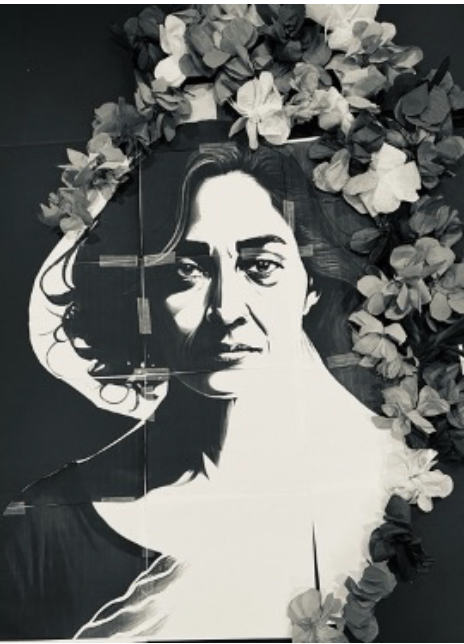

I thought digital work was not for me because it felt so far removed from the digital world. But after the selfie project, when a digital image translated to an activity that brought my grandmother to life for my family, I saw there can be a hazy boundary between the material and the digital.
"